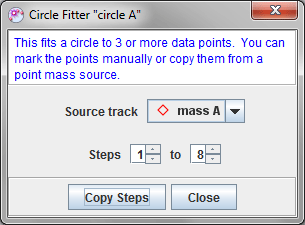

and choose Measuring Tools|Circle Fitter from the popup menu. Multiple circle fitters can be created as needed.
and choose Measuring Tools|Circle Fitter from the popup menu. Multiple circle fitters can be created as needed.A circle fitter track is a tool for fitting circles and finding their centers. It requires at least 3 data points, but can fit a circle to any number of points. Points can be marked manually or copied from a point mass source.
To create a circle fitter, click the Create button and choose Measuring Tools|Circle Fitter from the popup menu. Multiple circle fitters can be created as needed.
At least 3 data points are required to fit a circle. To mark points manually, shift-click the video repeatedly along a circular path. You can mark as many points as you wish; all points are weighted equally in the fit. To move a marked point, select it and drag with the mouse or nudge it using the arrow keys.
Once 3 or more data points have been marked, the radius and center position of the best fit circle is displayed on the toolbar as shown below. Also, if a data point is selected, its position is displayed and you can enter a desired position directly in the x or y toolbar fields.
By default, the circle fitter has a fixed position--that is, the data point positions and fitted circle center and radius are the same in all frames. Uncheck the Fixed Position checkbox in its track menu to allow these properties to vary independently from frame to frame.
It is often useful to fit a circle to the path of a existing point mass track. You can do this easily by copying some or all of the point mass step positions using the dialog shown below. The dialog is displayed automatically when the circle fitter is first created. To redisplay the dialog after closing it, choose the Copy Point Mass Steps... item in the circle fitter's track menu. To copy data points, select the desired point mass source from the dropdown list, set the desired step range, and click the Copy Steps button. Note: copied data points are not "attached" to the original point mass positions--i.e., the circle fitter points can be moved or deleted without affecting the point mass positions, and vice versa.

To move the origin of the coordinate system to the center of the circle in every frame, choose the Move Origin to Center item in the circle fitter's track menu. This is particularly useful when the center of the circle is outside the video frame (e.g., a video of a pendulum bob that does not include the support).
Locking the circle fitter prevents any changes to the data points or circle. Lock the circle fitter by turning on the Locked property in its track menu.